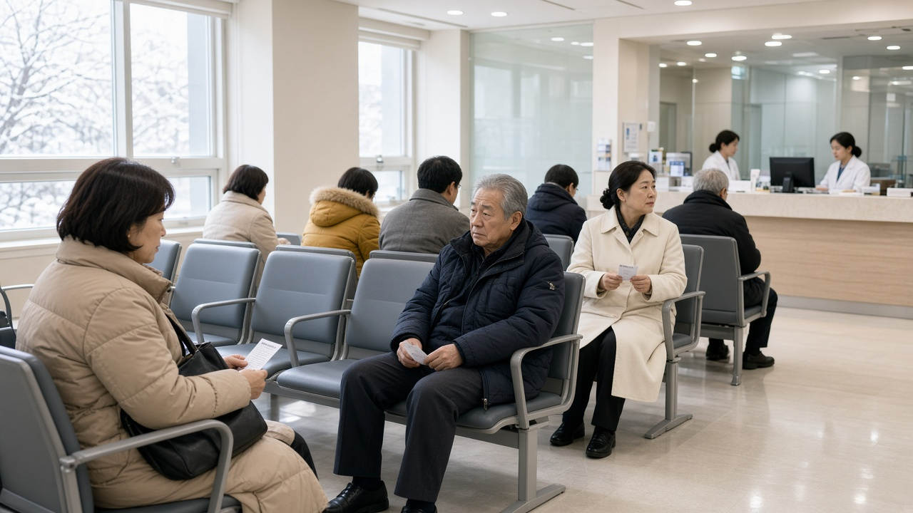

국가건강검진 12월 31일 놓치면 끝일까, 내년 추가 신청과 직장인 과태료 정리
올해가 두 달 남짓 남았는데 건강검진 안내 문자를 아직 그냥 넘기고 계신 분들 많으실 거예요.
막상 병원에 전화해 보면 12월 예약은 벌써 꽉 찼다는 말을 듣기도 하고요.
그래서 오늘은 올해 국가건강검진을 기한 안에 못 받으면 실제로 어떻게 되는지, 내년에 다시 받을 길은 있는지, 직장인은 과태료가 붙는지를 차례대로 정리해 볼게요.
올해 검진 대상과 마감일부터 확인하기
2026년 일반 국가건강검진은 만 20세 이상 짝수년도에 태어난 분이 기본 대상이에요.
다만 지역세대주와 직장가입자는 나이와 상관없이 대상이 되고, 직장가입자 중 사무직은 2년에 한 번, 생산직이나 영업직 같은 비사무직은 해마다 받아요.
올해 검진 기간은 12월 31일까지이고, 일반검진은 본인 부담이 없어요.
내가 대상인지는 국민건강보험공단 누리집이나 The건강보험 앱의 건강검진 대상 조회에서 바로 볼 수 있고, 검진기관은 주소지와 상관없이 지정된 곳이면 어디서든 받을 수 있어요.
지금 확인해 두면 연말에 예약 전쟁을 피할 수 있다는 게 가장 큰 의미예요.

12월을 넘겨도 다음 해 추가 신청으로 다시 받을 수 있어요
많이들 오해하시는 부분이 해를 넘기면 2년 뒤까지 기다려야 한다는 건데요, 그렇지 않아요.
전년도 미수검자 추가 신청이라는 제도가 있어서, 올해 못 받은 분은 내년에 공단에 신청하면 다시 대상자로 등록돼 검진을 받을 수 있어요.
실제로 공단은 올해도 2025년 미수검자에게 12월 31일까지 추가 신청을 하면 2026년에 검진을 받을 수 있다고 안내했어요.
지역가입자와 피부양자는 공단 누리집 건강모아에서 나의 건강, 검진 신청, 전년도미수검자 추가신청 순서로 들어가거나 앱의 같은 메뉴, 고객센터 1577 1000으로 직접 신청하면 돼요.
직장가입자의 일반검진은 본인이 아니라 회사 담당자가 공단 EDI, 즉 회사용 전자 신고 시스템에서 대상자 추가를 등록해야 하니 1월이 되면 인사 담당자에게 먼저 말해 두는 게 좋아요.
암검진은 항목마다 넘어가는 방식이 달라요
국가암검진은 위암, 대장암, 간암, 유방암, 자궁경부암, 폐암 이렇게 여섯 가지를 나이와 주기에 맞춰 시행해요.
2년 주기인 위암, 유방암, 자궁경부암 검진은 전년도 미수검 추가 신청 대상이 될 수 있지만, 해마다 대상이 정해지는 대장암과 6개월마다 대상이 정해지는 간암은 따로 넘겨 받는 절차가 없다고 알려져 있어요.
비용도 알아 두면 좋은데요, 건강보험료 하위 50퍼센트에 해당하면 암검진 비용 부담이 없고, 상위 50퍼센트는 위암, 유방암, 간암, 폐암 검진 비용의 10퍼센트를 내요.
대장암 분변잠혈검사와 자궁경부암 검진은 보험료와 상관없이 본인 부담이 없어요.
공단이 제시한 하위 50퍼센트 기준은 지역가입자 보험료 6만원 이하, 직장가입자 12만7500원 이하예요.
직장인은 과태료가 붙을 수 있어요
지역가입자나 피부양자는 검진을 거른다고 과태료가 생기지 않아요.
하지만 직장인 건강검진은 산업안전보건법에 따른 회사의 의무이면서 근로자의 의무이기도 해요.
고용노동부 안내를 보면 회사가 검진을 실시하지 않으면 근로자 1명당 1차 10만원, 2차 20만원, 3차 30만원의 과태료가 붙을 수 있고, 근로자가 받지 않으면 1차 5만원, 2차 10만원, 3차 15만원이에요.
회사가 1년에 두 번 이상 검진을 안내한 사실을 입증하면 회사는 빠지고 근로자에게만 과태료가 붙을 수 있다는 점도 기억해 두세요.
그러니 회사에서 안내 문자가 여러 번 왔다면 그냥 넘기지 말고 올해 안에 받거나, 사정이 있다면 회사와 공단에 미리 연기나 추가 신청 방법을 물어보는 게 안전해요.
지금 해 두면 좋은 순서
먼저 앱이나 누리집에서 올해 대상인지, 일반검진과 암검진 중 어떤 항목이 남아 있는지 확인하세요.
다음으로 가까운 검진기관 두세 곳에 11월이나 12월 초 예약이 되는지 바로 물어보세요. 연말로 갈수록 예약 잡기가 훨씬 어려워져요.
도저히 날짜가 안 나면 내년 1월에 전년도 미수검자 추가 신청을 하되, 직장인은 회사 담당자에게, 지역가입자는 공단에 직접 신청한다는 차이만 기억하시면 돼요.
검진 당일에는 신분증을 꼭 챙기시고, 결과는 검진기관이 보내 주는 통보서나 공단 앱의 검진 결과 조회에서 확인할 수 있어요.
오늘 내용은 10월 30일 기준 국민건강보험공단과 고용노동부 안내를 정리한 일반 정보이고, 신청 가능 기간과 세부 조건은 해마다 바뀔 수 있으니 공단 고객센터에서 한 번 더 확인해 보시길 권해요.
참고 자료 국민건강보험공단 2026년 국가건강검진 안내 동아일보 2026년 10월 8일 보도, 대한민국 정책브리핑 달라진 국가건강검진 안내, 고용노동부 건강진단 미실시 과태료 민원 답변, 국가법령정보센터 산업안전보건법 제129조
태그 국가건강검진 건강검진마감 전년도미수검자 건강검진추가신청 직장인건강검진 건강검진과태료 국가암검진 짝수년생건강검진 건강검진예약 국민건강보험공단